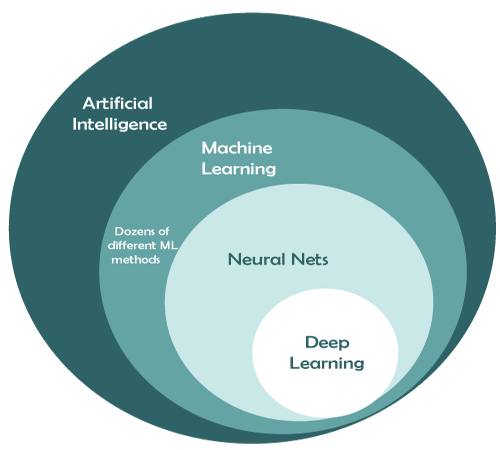
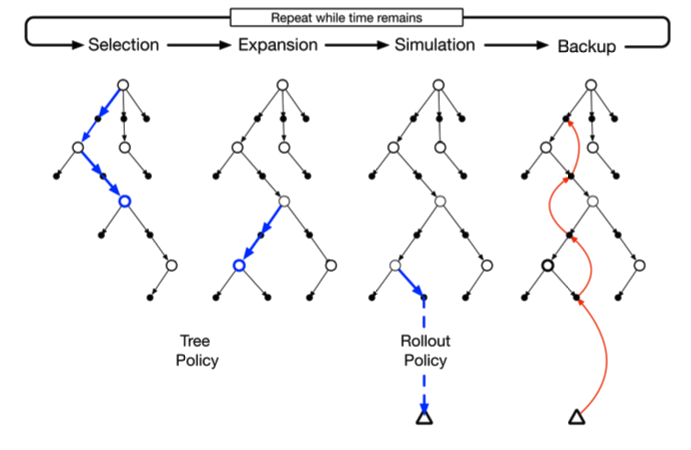
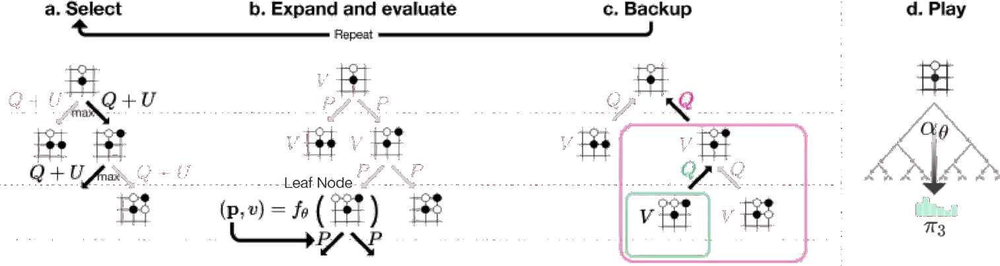

TLDR (click to show/hide)
2048 is an easy game to learn but can be difficult to master unless you know the 'optimal' strategy. This article covers how we can use the Monte Carlo Tree Search algorithm to not just beat the game, but excel beyond the typical human performance without actually 'learning' how to play.
It's common to conflate Artificial Intelligence with Machine Learning. There are of course different subtopics within Machine Learning itself like supervised, unsupervised, and reinforcement learning, but ML as a whole is distinct from AI because there exist algorithms that appear intelligent without learning anything at all. It seems like lacking a mechanism for learning would be very limiting when dealing with more complex tasks, but these sorts of methods can be used to extend the abilities of already high-performing ML agents and, as you'll read in this article, can end up performing quite well on their own.

2048
You may have played or at least heard of the popular game 2048 which launched back in March 2014. The idea is simple enough, sliding tiles in a 4 x 4 grid either up, down, left, or right and combining them when their values are equal. To keep the game going, every time a move is made, a new tile (either a 2 or 4) will spawn randomly in one of the open tiles.
The game is lost when there are no remaining movements that can be made to change the board state. Though you could technically combine tiles to incredibly high powers of 2, its difficult enough to reach 2048 (2^11) that human players consider that to be 'winning'. The typical strategy to make it this far is to keep your highest value tiles in the corner and snake them in a descending order around the board to maintain a chain that can easily be fully combined when able.
I made a basic pygame version to play a few years back but left the engine general enough to handle n x n boards and more easily allow for programmatic inputs. It ended up being a toy example that I could come back to as a way of testing different 'input schemes' I came up with like my dance pad programming project.

An example of a human playing 2048
Monte Carlo Tree Search
One of the easiest to understand and yet highly performant non-learning algorithms is Monte Carlo Tree Search (MCTS). At its core MCTS is, as it says in the name, a search algorithm. It maintains no long-term memory of learned parameters, environment states, etc. It's simply a method for approaching tree search problems where the search space is incredibly large (to the point where exhaustively searching would be literally impossible). The algorithm is commonly used for playing games, which is why I decided to try applying it to 2048.
MCST maintains a temporary state-action tree in memory which it expands and prunes on the fly as the state changes. Each node represents either a state or an action that can be taken from that state (appearing in alternating layers). A value is associated to each state node which the algorithm uses to determine how good being in that state seems to be.
The root node always represents the current state while its children represent possible future states which are actively being evaluated. The only requirement for using this algorithm is having a model of the environment (game) which can be queried (for any state we're in, we can simulate what the outcome of any action would be).
The algorithm consists of four main parts:
-
Selection
Traverse the tree down to an action node which has not been explored yet according to a tree policy. Since the root node is the current state of whatever game we're playing, this step can be interpreted as us 'thinking ahead' to positions we haven't fully thought through yet.
The tree policy can be anything; randomly selecting actions until we come across something we haven't explored, greedily choosing the options we currently think are the best, or following an upper confidence bound action selection method which attempts to balance exploration with greedy decision making.
-
Expansion
Once we've reached a state with an unexplored action, we use our model of the environment to simulate that action and expand our in-memory tree to include the resulting state and its available actions.
-
Simulation
We're now in a position we haven't seen yet. To gauge how good it is, we can rapidly simulate many games out until termination and average the performance of those games to get a sense of the 'value' of this position. Since we're already a decent ways out from our true current state, its not useful to store these simulations in our tree.
Our choice of actions from this point follows a rollout policy which, like the tree policy, can be anything we want. The limiting factor is that all of our decisions are being made in uncharted territory (these game states are not yet a part of our tree) so we don't have state values to base our decisions off of.
We again have the option for randomly selecting moves until the game terminates in each simulation, but we can easily plug in other decision models like actual ML agents.
-
Backup
The value of a child state should affect the value of its parent (if the game isn't looking good for me a few moves away, I should be worried about where I'm at now). To propagate what we've learned about the value of our state from the simulations, we update all of the states above the node we just ran them from.
This update and the way we represent value for each node in general depends on the type of environment we're dealing with. If its the type of game where you have a boolean outcome (either you win or lose), it is usually sufficient to store the ratio of simulated wins to losses associated with each state.

MCTS diagram (image from Reinforcement Learning, An Introduction by Sutton and Barto). The white nodes represent states of an environment and the black nodes represent the possible actions that can be taken from each.
By repeating this process of tree exploration/expansion, simulation, and value-estimation, we can gain probabilistic information about what the best expected outcome would be from our current state no matter where we are in the massive state space. Once we select a move, we can prune away all of the nodes that are no longer reachable and continue until the game terminates.
Combining the Two
Playing 2048 specifically with MCTS is actually pretty easy.
We don't need the selection and expansion steps since they can actually skew the value away from what the true expecation of our current state should be. This is because of the stochastic element of actions in 2048 - when 2's and 4's get added randomly following a move. If we were to try and think ahead even just a few steps, the simulated state could be vastly different from what we would actually see making those moves.
Instead, we can get away with just running the simulation step from our current state directly, N-many times for each action available. In my implementation, I just went with a random rollout policy. Since the moves the rollout policy makes are not the best, I averaged the scores of 30 of them for each action to get a better idea of what the relative expected value of the actions were.
Since the game doesn't have a true win-condition, I instead track and backup the score for each simulation. We can also get a speedup by only simulating out T-many steps into the future (as opposed until playing until termination). By making T large enough, we can ensure (in expectation) that the algorithm should not decide to take a move that would likely cause it to lose in the next T-steps.
MCTS with N=30 simulations per move going T=20 steps deep on each
With very little complexity, MCTS is able to beat this game that the average human player would have some difficulty with. Interestingly, it doesn't seem to maintain much of a strategy compared to humans who need to keep their higher valued tiles in the corner. The algorithm does still lose in the end, but ramping up N and T would allow it to go further albeit at the cost of more computation per step.
MCTS in the Wild
Complex games with a much higher branching factor can't be 'solved' as easily as this. We managed to get away without a tree policy, a random rollout policy, and early termination of our simulations. However, MCTS is still incredibly useful as a means of extending other algorithms that learn an actual tree / rollout policy. For example, AlphaGo combined deep-learned value and policy networks with MCTS to beat the world champion Lee Sedol in 2016.
